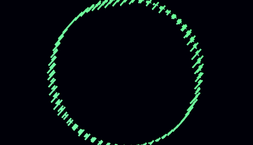

3D Sound Visualizer
Emmett Butler and David Coss
Summary
This project provides realtime 3d visualization of mono and stereo WAV audio streams. The visualizations created are mainly abstract and can be considered an emulation of the iTunes (or, more accurately, WMP) visualizer. It uses OpenGL, freeglut, portaudio and libsndfile to create these visuals in real time.
Invoked from the command line, the visualizer takes the name of an audio file and a number of flags specifying graphical behaviors. These can range from the basic flat waveform to a colorful, dynamic shape of constantly-changing data.
The main challenge of the project (beyond learning a book's worth of 3D graphics theory and practice) was to properly synchronize the audio streaming with the graphics rendering loop. This is accomplished using a shared buffer contianing a number of renderable "screens" worth of audio waveform data. The audio streamer acts as a server that fills free slots in the buffer, and the graphics rendering client pulls data from the filled slots. Since the audio runs at a much faster rate than the graphics, the audio ends up waiting around a bit. This is ok, since it has plenty of heavy number-crunching capacity as visualizations grow more advanced.
Usage
Visualizer <soundfile> [-w hamming|hann|cosine] [-c] [-s circle|line|wave] [-t] [-r auto|mouse]
soundfile : the file to be played
-w : the windowing function for the waveform
-c : enable flashing colors
-r : rotation mode
-s : base waveform shape
-t : exponential frame translation
<soundfile> must be a mono or stereo audio file. Supported formats include WAV, AIFF, and FLAC. For a list of file formats that are compatible with libsndfile but are untested with this program, see the libsndfile documentation.
-w is an optional argument to specify a windowing function for the waveform, giving the oscillator a "tapering" effect. Valid windowing functions are "hann", "hamming", and "cosine". Leaving out this flag or specifying an invalid window will result in no window being applied.
To test the visualizer, use one of the included test audio files in testfiles. For example: ./Visualizer testfiles/sonic.wav -c -t -s circle
The arrow keys can be used to manually move the camera forward, back, left, and right. When the -r mouse option is used, the mouse can be used to manually rotate the waveform.
Compiling
The project comes with a makefile with targets for linux and MacOS. The linux target is tested and works with jack, alsa, freeglut3 and libgl. Note that the project requires OpenGL 2.1 or later.API
Starting and ending audio
bool startAudio(PaStream *stream, const char* filename, const char* windowname);
void endAudio(PaStream *stream);
Handles all Portaudio and libsndfile functions necessary to begin or stop playback of the file with the specified file name. Example implementation:
PaStream *stream;
startAudio(PaStream *stream, "test.wav", "hamming");
Reading audio
All audio samples are stored in Packets. The packet structure is defined in Visualizer.h. Packet.frames is a 2D array of floats; the first dimension specifies the audio frame and the second dimension specifies the channel. Packet.free specifies whether the frames array is in read or write mode. If Packet.free is true, Packet.frames can be written to; if Packet.free is false, it can be read.
/* Visualizer.h */
#define PACKET_SIZE 256
#define PAC_CHANNELS 2
typedef struct _packet{
float frames[PACKET_SIZE][PAC_CHANNELS];
bool free; // is this packet free to overwrite
int order; // where in the sequence of samples is this packet
float averageAmp;
} Packet;
An array of Packets should be used in order to compensate for the framerate differences between the GL thread and the Portaudio thread. This is implemented in audio_helper.cpp and graphics_helper.cpp as sharedBuffer.Rendering Graphics
The main bulk of the graphics work happens in the RenderScene() function. This function is responsible for drawing the array of pre-created prisms representing the audio frames to the screen. It scales each prism proportionally to the amplitude value of the corresponding frame. It also performs a few scaling and translation transformations based on other audio parameters. To accomplish this, it uses the GLMatrixStack class from GLTools to help keep track of the various visual transformations.
Read the code:
On Github
